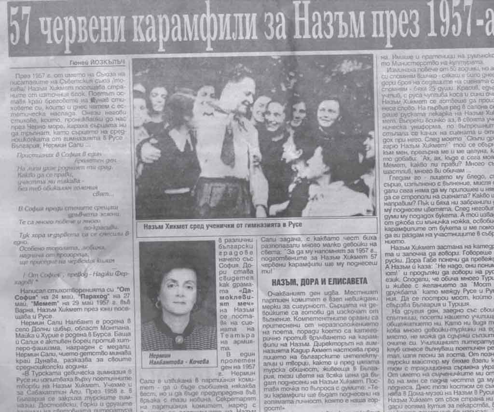

Güney Özkılınç’ın Nermin Sali Nalbant’la (Koçoğlu) ilgili Yeni Hayat/Nov Jivot (26-28 Mart 2011, Bulgaristan) gazetesinde yayınlanan yazısı
“...
Tuna’ya rastladım
akıyor çamurlu çamurlu
hey Hikmet’in oğlu, Hikmet’in oğlu
Tuna’nın suyu olaydın
Karaorman’dan geleydin
Karadeniz’e döküleydin
...”
(Nâzım Hikmet, Yeni Şiirler, s. 175)
“Orası bir okuldu. On yedi yaşında bir çocuk, yanı ben boyuna kitap okuyor, sürekli çiziyorum. Nâzım’a çırak durduktan sonra resim tekniğini öğrendim. Orada hepimiz hayat feyzi aldık...”
İbrahim Balaban